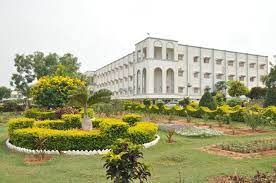

Madanapalle Institute of Technology & Science, established in 1998, is located in the picturesque and pleasant environs of Madanapalle. It is ideally situated on a sprawling 26.17-acre campus on Madanapalle - Anantapur Highway (NH-205) near Angallu, about 10 km away from Madanapalle.
MITS, originated under the auspices of Ratakonda Ranga Reddy Educational Academy, has been striving conscientiously to develop it as one of the best centers of Academic Excellence in India. The Institution's profile is firmly based on strategies and action plans that match the changing demands of the nation and the students’ fraternity.
MITS enjoys constant support and patronage of NRI's with distinguished academic traditions and vast experience in Engineering & Technology.
